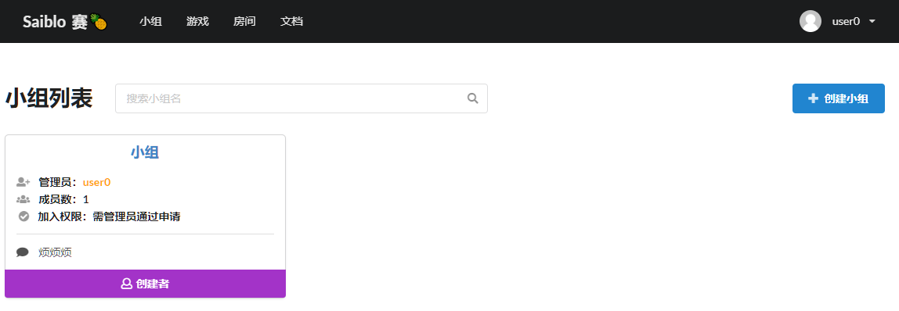

网站前端-小组系统
groups.vue
| 参数 | 值 |
|---|---|
| 地址 | /groups |
| 用途 | 查看所有的小组 |
| 权限 | 游客 |
| 预览 |  |
| 属性 | 解释 |
|---|---|
| show_modal | 在点击创建小组后，show_modal设置为true，用于显示创建小组的弹出窗体 |
| group_form | 创建小组中的表单，包含小组名，小组简介，申请理由 |
| isLoading | 加载中，在提交表单之后，等待服务器返回创建小组表格结果之间为True |
| isOK | 服务器返回提交创建申请成功后，isOK为True |
| err_code | 服务器返回提交创建申请失败后，err_code设为response的错误码 |
| groups | 页面中显示的所有小组，是从获取的所有小组origin_groups中筛选出与搜索小组名keyWord相关的所有小组 |
| origin_groups | 从服务器获取到的所有的小组，使用AsyncData获取值 |
| keyWord | 绑定到搜索的小组名 |
| 函数 | 参数 | 返回值 | 解释 |
|---|---|---|---|
| truncate | 原始字符串，截断长度 | 截断后的字符串表示 | 主要用于小组介绍过长时进行字符串截断 |
| apply | 申请的小组对象 | null | 点击申请加入某小组之后，调用该函数，首先判断与该小组的关系，如果没有入组，没有申请加入，发送申请加入的请求。如果小组的加入权限为任何人，那么注意加入成功后维护成员数+1 |
| cancel | 取消申请的小组对象 | null | 点击取消申请之后，调用此函数，首先获取自己的所有申请，之后找到申请该小组的那一条，向服务器发出取消这一条申请的请求 |
| quit | 退出已经加入的小组对象 | null | 点击退出小组之后，调用此函数，向服务器发出退出小组的请求，并且维护该小组对应的成员数-1，如果是管理员还要维护管理员列表 |
| show | null | null | 点击创建小组时，设置isLoading和isOK的初值（可能连续创建多个小组） |
| create_groups | null | null | 点击创建小组弹出窗口中的提交按钮后会调用此函数，首先进行Vuelidate验证小组名，简介，理由是否符合规范，然后将表单发送给服务器等待服务器确认表格提交成功与否，如果表格提交成功，关闭弹出窗口并显示成功信息 |
| searchKeyWord | null | null | 使用origin_groups和keyWord来更新groups的值 |
| keyWordFilter | 使用关键字筛选小组时的判定方式 | 判定结果 | 协助searchKeyWord进行筛选 |
| group_permission | 小组对象 | 显示加入权限文本 | 将加入权限参数转化为可读文本 |
| 依赖部件 | 传入部件参数 |
|---|---|
| confirm-button | 确认退出时弹出的消息，调用quit(group)函数之前弹出确认信息 |
admin_groups.vue
| 参数 | 值 |
|---|---|
| 地址 | /admin_groups |
| 用途 | 超级管理员用于管理所有小组 |
| 权限 | 超级管理员 |
| 预览 |  |
| 属性 | 解释 |
|---|---|
| group_modal | 在小组申请列表中，点击组名，可以查看这条申请的详细信息，弹出窗口中的数据绑定到group_modal上 |
| applying_groups | 使用asyncData获取值，表示所有创建小组的申请 |
| approved_groups | 使用asyncData获取值，表示所有已经通过申请的小组 |
| 函数 | 参数 | 返回值 | 解释 |
|---|---|---|---|
| read_detail | 申请编号，小组姓名，小组简介，申请理由 | null | 将想阅读详细信息的申请的数据绑定到group_modal上，用于弹窗显示（好像实现麻烦了） |
| approve | 同意通过的小组 | null | 点击申请列表中的某条申请的同意之后调用，向服务器发送请求，注意成功时维护申请列表和已通过小组列表 |
| reject | 拒绝通过的小组 | null | 点击申请列表中的某条申请的拒绝之后调用，向服务器发送请求，注意拒绝成功时维护申请列表 |
| delete_group | 删除已经通过的小组 | null | 点击已通过的列表中某个小组的删除之后调用，向服务器发送请求，删除成功时要维护已通过的小组列表 |
groups/_id.vue
| 参数 | 值 |
|---|---|
| 地址 | /groups/<group id> |
| 用途 | 查看编号为group id的小组的详细信息 |
| 权限 | 登录用户 |
| 预览 |  |
| 属性 | 解释 |
|---|---|
| notice | 在公告列表中，点击某条公告，可以查看这条公告的详细信息，弹出窗口中的数据绑定到notice上 |
| contests | 该小组下属所有比赛，使用asyncData获取值 |
| isLoading | 在向服务器发送申请加入小组/取消申请/退出小组时，设为True，表示正在发送请求 |
| caution | 在比赛列表中选择切换AI时会弹出提醒窗口，提醒用户扣分惩罚，弹出窗口的数据绑定到caution上 |
| group | 小组对象，通过地址中小组编号向服务器请求后获取，使用asyncData获取值 |
| 函数 | 参数 | 返回值 | 解释 |
|---|---|---|---|
| read_notice | 选中的通知的id | null | 点击通知查看详情时调用，根据notice id判断是哪条通知，将详细信息绑定到notice上 |
| apply/cancel/quit | null | null | 与groups.vue中使用方法相同 |
| selectCode | 选中的比赛对象，选中的代码分支 | null | 修改向某比赛派遣的AI的分支，或是向某比赛派遣新分支 |
| cancelCode | 选中的比赛对象 | null | 取消向该比赛排遣的分支 |
| openCaution | message | null | 在更换派遣AI或是取消派遣时，弹出积分惩罚的弹窗 |
| 依赖部件 | 传入部件参数 | ||
| ------------ | ---------------------------------------- | ||
| codeSelector | 当前用户名，游戏名，原始派遣的代码分支等 |
groups/_slug/manage.vue
| 参数 | 值 |
|---|---|
| 地址 | /groups/<group id>/manage |
| 用途 | 管理小组编号为group id的小组的信息，包括加入权限，发布公告，成员管理，比赛管理等等 |
| 权限 | 该小组的小组管理员 |
| 预览 |  |
| 属性 | 解释 |
|---|---|
| group | 小组对象，通过地址中小组编号向服务器请求后获取，使用asyncData获取值 |
| competition_editor | 管理比赛选项卡相关的变量 |
| competition_editor.competition | 在管理比赛选项卡中点击新增或是修改比赛，弹出表格弹窗，表格数据绑定到这里 |
| competition_editor.isLoading | 正在向服务器提交competition_editor.competition表单 |
| competition_editor.isOK | 提交表单成功 |
| competition_editor.err_code | 提交表单失败，err_code设为响应的status code |
| competition_editor.create | 是否是以新增比赛的方式打开弹窗的 |
| competition_editor.game_options | 所有已经部署的游戏列表，用来实现表格弹窗中的下拉菜单，使用asyncData获取值 |
| info | 小组信息选项卡相关的变量，同时也绑定了修改小组信息时提交表单中的数据，包括小组名，小组加入权限，小组介绍等等 |
| notice_form | 管理公告选项卡相关的变量 |
| notice_form.notices | 所有公告，使用asyncData获取值 |
| notice_form.modal | 点击公告会弹出公告详情的弹窗，该弹窗中所有的数据绑定到这里 |
| permission_options | 用于实现申请权限的下拉菜单 |
| competitions | 所有该小组的比赛，使用asyncData获取值 |
| applications | 所有加入该小组的申请，使用asyncData获取值 |
| members | 所有小组内的成员，使用asyncData获取值 |
| id | 当前所在选项卡的编号 |
| 函数 | 参数 | 返回值 | 解释 |
|---|---|---|---|
| modifyInfo | null | null | 点击小组信息中的确认修改按钮后会调用此函数，首先进行Vuelidate验证小组名，简介是否符合规范，然后将表单发送给服务器等待服务器确认表格提交成功与否，如果表格提交成功，关闭弹出窗口并显示成功信息 |
| formatContests | 所有比赛 | null | 根据从服务器中获得的所有比赛的原始数据中的时间，推断现在比赛的状态为未开始还是进行中 |
| reloadInfo | null | null | 修改小组详细信息成功后，重新获取小组详细信息 |
| delete_competition | null | null | 管理比赛中点击删除调用，删除该比赛并维护比赛列表 |
| submit_competition_editor | null | null | editCompetition调用，用于提交弹窗表格到服务器上，首先进行Vuelidate验证比赛名，简介是否符合规范，然后将表单发送给服务器等待服务器确认表格提交成功与否，如果表格提交成功，关闭弹出窗口并显示成功信息 |
| editCompetition | 要编辑的比赛 | null | 在比赛编辑选项卡点击某比赛后面的修改时调用，设置competition_editor.create，然后将数据传给competition_editor.competition，调用submit_competition_editor |
| handleApplication | 要处理的申请的id，通过/拒绝 | null | 管理成员选项卡中申请列表里，选通过或拒绝时调用，将处理申请的结果提交给服务器 |
| changeManager | 用户名，true | null | 将某用户提升为小组管理员 |
| deleteMember | 用户名 | null | 将某用户踢出小组 |
| demote | 用户 | null | 将某用户从管理员降至普通成员 |
| isManager | 用户名 | null | 判断某用户是否为小组管理员 |
| isActive/select | id | null | 用于判断当前位于哪个选项卡 |
| 依赖部件 | 传入部件参数 |
|---|---|
| groupNoticeEditor | 小组编号 |